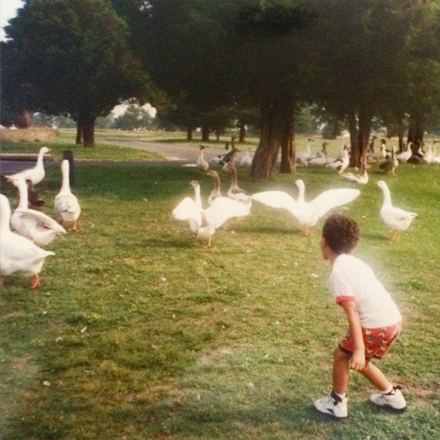

Hi. I’m Darren Angle. I am an artist and writer.
I learned to write and be a thoughtful human at Macalester College and Brown University, where I was a Seaver Fellow and creative writing instructor.
I was the Director of Digital Operations at Upshot Agency, where I produced large amounts of code and digital marketing strategy for several companies, including Google, Starbucks, Proctor and Gamble, KraftHeinz, Liftmaster, Nuveen Investments, SUBWAY, and Constellation Brands (Corona, Modelo).
Currently, I run a company called You Should Quit Your Job. As you may have guessed, we help people quit their jobs.
(Yes, it is the best job ever.)
You can see what I’m reading here.
You can see my photography here:
Instagram: @darren.angle
You can see some of my drawings here:
Instagram: @drawdarren
You can read some of my poems here:
BOMB
THE VOLTA
LIT
WHAT LIGHT
You can see what I’m coding here:
Github: @darrenangle